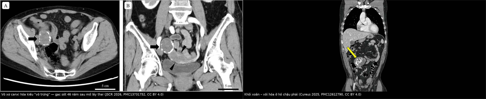
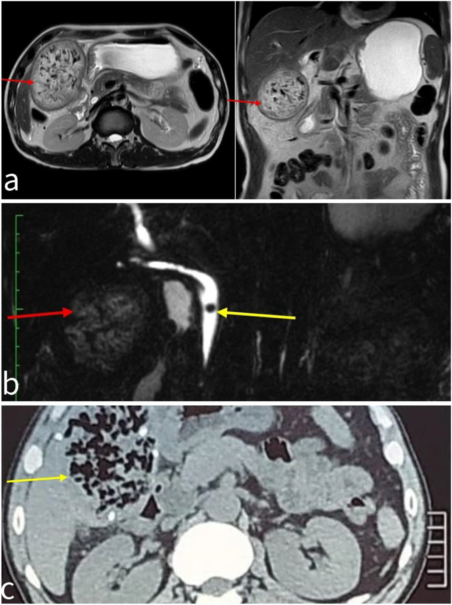
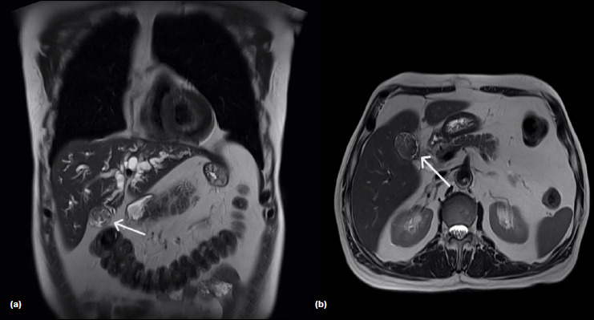
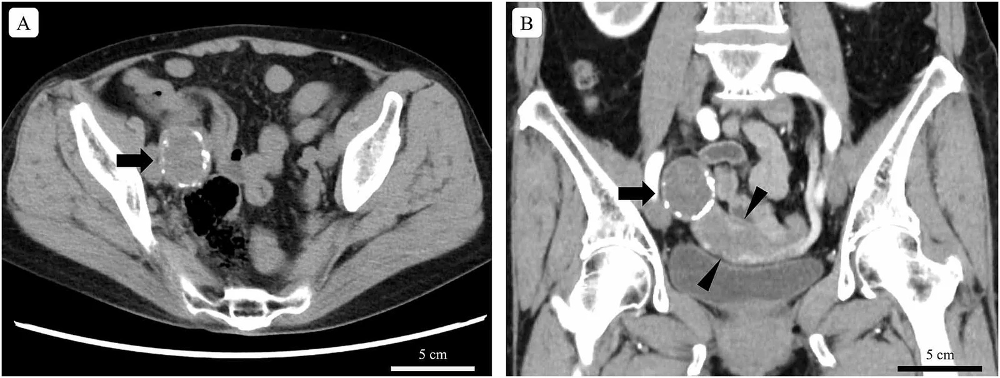

3112 — Gạc sót sau mổ (gossypiboma): khối "giả u" có khí, vôi hóa và dấu xoắn — đừng chọc dẫn lưu, đừng cắt nhầm
Tags: pattern:di-vat pattern:khoi-sau-mo pattern:voi-hoa pattern:khong-ngam-thuoc pattern:ap-xe-sau-mo vung:o-bung vung:tieu-khung vung:thanh-bung anatomy:phuc-mac protocol:CT-bung-co-can-quang protocol:XR-bung protocol:MRI-bung incidentaloma:khoi-sau-mo
Mức chắc chắn (certainty): tổng hợp y văn (literature synthesis) — ghép loạt 14 ca gạc sót được xác nhận phẫu thuật trong 15.120 ca mổ (Cureus 2024, PMC11297663), ca gạc sót canxi hóa tồn tại 46 năm (JSCR 2026, PMC13731752), ca gạc sót gây hẹp đường mật sau cắt túi mật nội soi (TJTES 2026, PMC13478480), ca gạc sót dưới gan có khí trong ổ (IJSCR 2026, PMC13652485) và các báo cáo về di trú xuyên thành ruột. Không có ca do nhóm tự chụp.
Câu hỏi thực hành: nữ 74 tuổi, đang chụp CT phân giai đoạn ung thư manh tràng, phát hiện khối 4 cm ở tiểu khung, vôi hóa viền kiểu "vỏ trứng", nằm cạnh đáy tử cung. Tiền sử mổ lấy thai 46 năm trước. Bác sĩ siêu âm gọi là "u xơ tử cung thoái hóa". Câu hỏi: có phải u thật không, và nếu là gạc sót thì xử trí thế nào? Bài chốt ba quyết định: (1) mọi khối "giả u" sau mổ — đặc, có khí, có vôi hóa viền, không ngấm thuốc, hoặc có cấu trúc xoắn — phải đặt gạc sót vào chẩn đoán phân biệt, bất kể đã mổ bao nhiêu năm; (2) CT 1–2 mm có cản quang là chuẩn (chẩn đoán đúng 10/11 ca trong loạt 14 ca), X-quang chỉ thấy marker và bỏ sót tới 36,4%, siêu âm bỏ sót 38,5%; (3) không chọc hút/dẫn lưu qua da để "điều trị" — gạc sót phải lấy ra bằng mổ, dẫn lưu đơn thuần tạo rò mạn và nhiễm khuẩn; áp-xe quanh gạc chỉ dẫn lưu tạm rồi mổ.
1. Tổng quan bệnh học – cơ chế hình ảnh: vì sao một miếng gạc lại thành "khối u có khí"
- Định nghĩa: gossypiboma (textiloma, gauzoma) là vật liệu dệt y tế sót lại trong cơ thể sau mổ, thường là gạc/gạc bụng (laparotomy sponge). Cơ thể phản ứng theo hai con đường (PMC11297663):
- Thể tiết dịch – viêm mủ (exudative): phản ứng viêm cấp, tạo áp-xe, có thể rò ra da, vào ruột hoặc bàng quang; hình ảnh là ổ dịch vỏ dày ngấm thuốc ± khí.
- Thể xơ – tạo bao (fibrinous): phản ứng hạt mạn, bao xơ hóa quanh gạc, thành khối giả u không triệu chứng; theo thời gian vôi hóa thành viền "vỏ trứng" hoặc vôi hóa lấm chấm.
- Tần suất — bốn con số định lượng:
- 0,09% (14/15.120 ca mổ) trong loạt 7 năm tại Yemen; 50% sau mổ phụ khoa, tuổi trung bình 32,5 ± 17,0, 71,4% nữ; trung vị 37 ngày từ mổ tới khi có triệu chứng (PMC11297663).
- Ước tính chung 1/1.000 – 1/1.500 ca mổ trong ổ bụng (PMC13499996).
- Tiểu khung là vị trí hay gặp nhất (56%) (PMC13456777).
- ~50% các vụ kiện y khoa về "dị vật sót" liên quan tới gạc sót (PMC13253992).
- Thời gian — "không có giới hạn": trung vị 37 ngày, nhưng đã báo cáo 46 năm (ca canxi hóa tiểu khung, PMC13731752), 35 năm (Cureus 2025, PMC12612790), 15 năm (di trú vào ruột non). Vì vậy "mổ cách đây 40 năm" không loại trừ.
- Yếu tố nguy cơ — đo được, không phải "sơ suất cá nhân": mổ cấp cứu + kéo dài > 1 giờ (50%), nhiều kíp phẫu thuật / thay ca điều dưỡng giữa cuộc mổ (35,7%), BMI cao, mổ phụ khoa, chảy máu nhiều (PMC11297663). Đếm gạc đúng vẫn có thể sót — nên hướng dẫn an toàn khuyến cáo gạc có cản quang, đếm thành tiếng + ghi bảng, chụp X-quang khi nguy cơ cao.
- Hiệu năng chẩn đoán — vì sao CT là "cửa chốt": trong loạt 14 ca, CT đúng 10/11 ca (90,9% các ca được chụp CT), X-quang không chẩn đoán được 4/11 (36,4%), siêu âm không chẩn đoán được 5/13 (38,5%) (PMC11297663). Nói cách khác: X-quang chỉ thấy marker (và nhiều gạc không có marker, hoặc marker bị bỏ qua), siêu âm bị hơi ruột che, còn CT nhìn được cấu trúc bên trong khối.
- TẠI SAO CT thấy "spongiform" — vật lý của sợi cotton và khí:
- Gạc là sợi cellulose khô, giữ nhiều khí giữa các sợi → trên CT là cấu trúc lấm chấm khí (mottled gas, gần −1.000 HU) xen sợi mảnh đậm hơn, tạo hình "bọt biển"/"tổ ong". Khí này có thể do không khí bị giữ trong gạc hoặc do vi khuẩn sinh hơi/đường rò từ ruột.
- Chỉ cản quang trong gạc (radiopaque marker) cho đường đậm, mảnh, uốn lượn ("serpiginous") — đôi khi bị nhầm là kim loại/dụng cụ hoặc mảnh xương.
- Bao xơ quanh gạc: mô xơ ngấm thuốc chậm ở thì muộn, dày vài mm, có thể vôi hóa viền sau nhiều năm (HU > 200). Khối không ngấm thuốc ở trung tâm vì bên trong là gạc, không có mạch.
- Dấu "xoắn/whirl" (nếp gạc cuộn) và dấu "vỏ trứng" (canxi hóa viền) là hai mẫu hình hay gặp ở thể xơ mạn (PMC12612790, PMC13731752).
- TẠI SAO MRI khác CT — và khi nào MRI hơn:
- Sợi cotton rất ít proton linh động → trên T2 tạo dải/tuyến tín hiệu THẤP (đường đen mảnh) trên nền tín hiệu trung bình–cao của dịch/viêm; hình "reticular"/"mesh-like" này thấy rõ ở ca IJSCR 2026 (Hình a: ổ tín hiệu trung bình–cao có khí bên trong, viền sợi tối).
- Bao xơ T2 thấp, ngấm thuốc muộn; thể tiết dịch T2 rất cao, viền ngấm mạnh.
- DWI: mủ hạn chế khuếch tán (ADC thấp) còn khối xơ/gạc thì không — vì vậy DWI giúp phân biệt thể áp-xe với thể xơ, không giúp phân biệt với u.
- TẠI SAO dễ bị gọi là ung thư/tái phát: khối đặc, bờ không đều, dính, có thể tăng FDG do viêm hạt; bệnh nhân lại có tiền sử ung thư → bác sĩ nghĩ tái phát/di căn và cắt bỏ (đã có ca cắt phân thùy gan vì tưởng u, PMC12309357). Chỉ tiền sử mổ + mẫu hình trong khối mới cứu được bệnh nhân khỏi phẫu thuật lớn không cần thiết.
2. Mẫu hình + chẩn đoán phân biệt theo vị trí và phản ứng mô (Gamut)
- Mẫu hình cốt lõi: khối sau mổ, bờ tròn/oval, có khí lấm chấm hoặc cấu trúc xoắn, không ngấm thuốc trung tâm, vỏ xơ ngấm chậm ± vôi hóa viền; bệnh nhân có thể hoàn toàn không triệu chứng hoặc chỉ đau âm ỉ/táo bón.
- Theo phản ứng mô:
- Thể xơ (fibrinous): khối đặc, vỏ dày, không triệu chứng, phát hiện tình cờ; vôi hóa sau nhiều năm; dễ nhầm u xơ, teratoma, u tái phát.
- Thể tiết dịch (exudative): áp-xe, sốt, đau, rò ra da/ruột/bàng quang; hình ảnh ổ dịch vỏ dày + khí, có thể dò vào lòng ruột.
- Theo vị trí (quyết định đường mổ):
- Tiểu khung (56%) — sau mổ phụ khoa/sản khoa; dễ nhầm u xơ tử cung thoái hóa, u buồng trứng, nang cùng đồ.
- Dưới gan / gan — sau cắt túi mật; có thể gây hẹp đường mật, vàng da (PMC13478480) và bị gọi là u gan.
- Lòng ruột non — do di trú xuyên thành; biểu hiện tắc ruột, đôi khi không có dấu thủng vì ruột tự bịt; dễ nhầm bã thức ăn (bezoar).
- Bàng quang — gạc đóng cặn thành "sỏi bàng quang", đái máu, đái buốt.
- Thành bụng / vết mổ — khối dưới da, dễ nhầm u hạt, áp-xe, di căn (nối bài 3111).
- Trung thất/ngực — sau mổ tim–lồng ngực, hiếm.
- Gamut "khối giả u sau mổ": gạc sót (2 thể), áp-xe, máu tụ, seroma/nang bạch huyết, u tái phát/di căn, u mô đệm (desmoid), lạc nội mạc, vật liệu cầm máu (Surgicel/Spongostan) chưa tiêu, u xơ tử cung thoái hóa/vôi hóa, teratoma, nang ký sinh trùng (hydatid) vôi hóa.
- Ba câu hỏi đọc ảnh: (1) có tiền sử mổ đúng vùng này không? (2) trong khối có khí/sợi/marker/xoắn không? (3) vỏ có ngấm thuốc muộn và vôi hóa viền không? Trả lời "có" cho (1) + bất kỳ ý nào của (2)/(3) → đặt gạc sót lên đầu.
3. Bảng so sánh phân biệt (ma trận đối chiếu)
| Thực thể (entity) | Hình ảnh điển hình (CT/MRI) | Chốt vào (rule-in) | Chốt loại (rule-out) | Gợi ý xác nhận |
|---|---|---|---|---|
| Gạc sót thể xơ (fibrinous) | Khối bờ rõ, vỏ xơ dày ngấm thuốc muộn, trung tâm không ngấm, khí lấm chấm/xoắn, vôi hóa viền | Tiền sử mổ + cấu trúc xoắn/spongiform + vỏ xơ | Ngấm thuốc đều toàn khối, không khí, không sợi → nghĩ u | CT 1–2 mm + cửa sổ xương; MRI T2 dải tối |
| Gạc sót thể tiết dịch (áp-xe) | Ổ dịch vỏ dày ngấm, khí trong ổ, mô mỡ quanh tăng đậm, có thể rò vào ruột/da | Vỏ ngấm + khí + sốt/đau + tiền sử mổ | Dịch thuần, vỏ mỏng, không khí → seroma | Chọc hút (cấy) chỉ để chẩn đoán; không dẫn lưu triệt để |
| Gạc sót di trú trong lòng ruột | Khối trong lòng ruột, spongiform ± marker, tắc ruột, không có khí tự do (ruột tự bịt) | Khối trong lòng + tiền sử mổ + tắc ruột | Bã thức ăn không có marker/sợi; không tiền sử mổ | CT đa bình diện; mổ nội soi/tháo lấy |
| Áp-xe sau mổ (không có gạc) | Ổ dịch vỏ dày, khí, có thể vách hóa, phản ứng mô mỡ | Hội chứng nhiễm trùng + ổ dịch ngấm viền | Không có cấu trúc sợi/xoắn/marker, không vôi hóa viền | Cấy dịch; kháng sinh + dẫn lưu |
| Máu tụ | 50–80 HU, không ngấm, hình đa cung, giảm đậm dần theo tuần | HU cao + không ngấm + sau chọc/mổ | Ngấm thuốc + khí + sợi → gạc/áp-xe | CT không cản quang; theo dõi |
| U tái phát / di căn | Nốt/khối đặc ngấm thuốc, DWI sáng/ADC thấp, lớn dần, có thể xâm lấn | Ngấm thuốc + DWI hạn chế + lớn dần | Không ngấm trung tâm + khí/xoắn → gạc | MRI DWI, PET/CT (cẩn thận dương tính giả) |
| U mô đệm (desmoid) | Khối dải tín hiệu thấp T2, ngấm thuốc, bám cân, tái phát sau cắt | Dải tối T2 + bám cân + tiền sử đa u xơ | Khí/sợi/marker → không phải desmoid | MRI; sinh thiết khi cần |
| Seroma / nang bạch huyết | Dịch 0–20 HU, vỏ mỏng không ngấm, hình thấu kính, giảm dần | Dịch thuần, vỏ mỏng, không khí | Vỏ dày ngấm + khí → áp-xe/gạc | Siêu âm; CT |
| Vật liệu cầm máu chưa tiêu (Surgicel) | Khối tăng đậm nhẹ, có thể khí, không marker, teo dần theo tháng | Tiền sử dùng vật liệu + khối teo dần | Không teo, có sợi/xoắn, vôi hóa → gạc | Theo dõi 3–6 tháng; MRI |
| U xơ tử cung thoái hóa / vôi hóa | Khối canxi hóa viền/lấm chấm, liên tục với tử cung, ngấm thuốc như cơ tử cung | Liên tục với tử cung, không có sợi/khí | Tách khỏi tử cung + xoắn/sợi → gạc | MRI T2; siêu âm |

Trái: khối tiểu khung 4 cm, vôi hóa viền kiểu vỏ trứng, tồn tại 46 năm sau mổ lấy thai (JSCR 2026, PMC13731752, CC BY 4.0). Phải: khối xoắn – vôi hóa ở hố chậu phải, 35 năm sau mổ (Cureus 2025, PMC12612790, CC BY 4.0). Ảnh ghép letterbox, giữ nguyên khung và mũi tên của tác giả.Ba mẫu hình cần nhớ (đọc trên ảnh gốc)
- "Spongiform" trên CT: lấm chấm khí trong khối đặc, kèm đường đậm uốn lượn (marker) — ca IJSCR 2026 (Hình c) cho thấy rõ cấu trúc bọt biển + đường viền đậm ở dưới gan.
- Dải sợi tối trên T2: ca IJSCR 2026 (Hình a) — ổ tín hiệu trung bình–cao với khí bên trong và các sợi tối; đây là "chữ ký" MRI của gạc, khác với u đặc ngấm thuốc đồng nhất.
- Vôi hóa viền "vỏ trứng": gặp ở thể xơ mạn, không đặc hiệu (u xơ thoái hóa cũng có) — nhưng khi khối tách khỏi tử cung và có tiền sử mổ, phải nghĩ gạc.

(a) MRI T2 ngang và dọc: ổ tín hiệu trung bình–cao, khí bên trong (mũi tên đỏ), cấu trúc sợi; (b) MRCP: sỏi ống mật chủ xa (mũi tên vàng) + gạc sót (đỏ); (c) CT có cản quang: cấu trúc spongiform với đường viền đậm. Nguồn: IJSCR 2026 (PMC13652485), CC BY-NC-ND 4.0 — hiển thị nguyên bản, không crop/ghép.4. Protocol chụp + ngưỡng xử trí
- Bước 1 — X-quang bụng (chỉ để tìm marker): rẻ, nhanh, nhưng không chẩn đoán được 36,4% ca trong loạt 14 ca; X-quang bình thường không loại trừ (gạc không marker, marker bị che). Dùng khi chưa có CT hoặc kiểm tra ngay sau mổ nguy cơ cao.
- Bước 2 — Siêu âm: khối tăng âm hình cung, có bóng lưng, đôi khi thấy khí trong khối; bị hơi ruột che, bỏ sót 38,5%; dùng để hướng dẫn chọc hút chẩn đoán (không phải điều trị).
- Bước 3 — CT bụng–tiểu khung có cản quang, lát 1–2 mm, đa bình diện (chuẩn): đọc 3 thì (động mạch/tĩnh mạch/muộn) để thấy vỏ xơ ngấm muộn; cửa sổ xương để tìm marker/vôi hóa; đo kích thước 3 chiều (mm), mô tả khí, xoắn, vôi hóa viền, tìm rò vào ruột/bàng quang, tắc ruột, hạch.
- Bước 4 — MRI (khi CT chưa chốt, hoặc cần phân biệt u): T2 + T1 fat-sat + DWI + ngấm thuốc muộn; tìm dải tối sợi, vỏ xơ, khí (trống tín hiệu); MRCP nếu vàng da/giãn đường mật.
- Bước 5 — PET/CT: KHÔNG dùng để chẩn đoán. Sau mổ, viêm hạt và mô hạt có thể tăng FDG — dương tính giả rất thường gặp trong bối cảnh hậu phẫu (pictorial essay FDG sau mổ, PMC8481839). PET chỉ dùng phân giai đoạn ung thư nền, không dùng để loại trừ gạc sót.
- Ngưỡng và nguyên tắc xử trí:
- Mọi gạc sót đã chẩn đoán đều phải lấy ra, kể cả không triệu chứng — vì nguy cơ rò, áp-xe, di trú, và ung thư hóa mô xơ (cực hiếm); phẫu thuật nội soi nếu khối nhỏ, không rò, không dính; mở nếu dính nhiều, có rò, hoặc đã mổ nhiều lần.
- Không dẫn lưu qua da đơn thuần: dẫn lưu chỉ giải áp tạm khi áp-xe lớn/nhiễm trùng nặng, sau đó vẫn phải mổ lấy gạc; dẫn lưu để lại rò mạn, nhiễm khuẩn tái diễn.
- Không sinh thiết mù rồi cắt lớn khi chưa loại trừ gạc sót: hỏi tiền sử mổ, xem cấu trúc trong khối, so phim cũ.
- Phòng ngừa (chuẩn bắt buộc): đếm gạc thành tiếng + ghi bảng, gạc có cản quang, checklist WHO, X-quang ngay tại phòng mổ khi mổ cấp cứu, > 1 giờ, thay kíp, BMI cao, chảy máu nhiều.
- Theo dõi sau lấy gạc: CT/MRI lại 3–6 tháng nếu có rò hoặc áp-xe; theo dõi nhiễm khuẩn vết mổ, hẹp đường mật (nếu ở dưới gan), tắc ruột (nếu di trú).
flowchart TD
A[Khoi sau mo + tien su phau thuat] --> B[CT 1-2 mm co can quang]
B --> C{Co khi lam cham, soi xoan hoac marker?}
C -->|Co| D[Gac sot - mo lay]
C -->|Khong| E{Vo day ngam thuoc + sot/dau?}
E -->|Co| F[Ap-xe - dan luu tam roi mo]
E -->|Khong| G{MRI T2 co dai toi soi?}
G -->|Co| D
G -->|Khong| H[Theo doi hoac sinh thiet co muc tieu]
5. Biến thể bình thường và cạm bẫy
- "Đếm gạc đúng" vẫn sót: đếm sai không phải điều kiện bắt buộc; thay ca, mổ cấp cứu, chảy máu làm đếm không đáng tin — đừng bỏ qua vì "sổ ghi đủ".
- X-quang âm tính: nhiều gạc không có marker, hoặc marker bị xương/túi mật che; X-quang không loại trừ.
- Chọc hút/dẫn lưu "chữa khỏi": dịch ra nhiều, bệnh nhân đỡ đau → tưởng thành công; sau đó rò mạn, nhiễm khuẩn, khối không mất; dẫn lưu không lấy được gạc.
- Gọi là u và cắt lớn: ca cắt phân thùy gan vì tưởng u (PMC12309357); ca cắt tử cung/buồng trứng vì tưởng u xơ/u ác — luôn hỏi tiền sử mổ và so phim cũ.
- Vôi hóa ở người già: "vôi hóa là lành" — sai; gạc sót 46 năm vẫn là gạc sót và vẫn có thể gây biến chứng.
- Di trú trong lòng ruột: hình ảnh giống bezoar; nếu không có marker, không loại trừ — hỏi tiền sử mổ, tìm tắc ruột, không có khí tự do vì ruột tự bịt.
- Gạc đóng cặn trong bàng quang: giống sỏi bàng quang; bệnh nhân đái máu tái diễn, tiền sử mổ phụ khoa/sa bàng quang.
- PET/CT dương tính giả: viêm hạt sau mổ tăng FDG; không dùng PET để loại trừ, và không đổi chẩn đoán chỉ vì PET dương.
- Vật liệu cầm máu (Surgicel) — bắt chước gạc: khối teo dần theo tháng, không có sợi/marker; theo dõi thay vì mổ ngay (PMC13544675).
- Bỏ sót thứ hai (satisfaction of search): đã thấy một khối vẫn phải đọc toàn ổ bụng — gạc có thể nhiều miếng hoặc kèm áp-xe thứ phát.
6. Tự lượng giá — Blind Quiz
Ca 1 — Nam 64 tuổi, vàng da 9 tháng sau cắt túi mật nội soi. Nhìn ảnh trước, mô tả sau.

- Gợi ý lâm sàng: đau tái diễn, buồn nôn; bilirubin toàn phần 11,66 mg/dL, GGT 930 U/L.
- Câu hỏi: Dấu hiệu chính trong và cạnh khối? Chẩn đoán nào giải thích cả khối và vàng da?
Bấm để hiện đáp án
- Dấu hiệu: khối 32 × 25 mm dưới gan, tín hiệu hỗn hợp có cấu trúc sợi, kèm giãn đường mật trong gan; bờ khối sát mỏ kẹp kim loại.
- Chẩn đoán: gạc sót gây hẹp đường mật lành tính muộn sau cắt túi mật; mổ mở lấy gạc + nối mật–ruột Roux-en-Y.
- Vì sao: vỏ xơ quanh gạc co kéo → hẹp ống mật chủ; không phải u đường mật dù hình ảnh giống.
- Nguồn: TJTES 2026 (PMC13478480), CC BY-NC 4.0.
Ca 2 — Nữ 74 tuổi, khối tiểu khung 4 cm tình cờ, tiền sử mổ lấy thai 46 năm trước.

- Câu hỏi: Vì sao không thể gọi là u xơ thoái hóa chỉ dựa vào vôi hóa? Dấu hiệu nào trên CT gợi ý gạc?
Bấm để hiện đáp án
- Dấu hiệu: khối bờ rõ, vôi hóa viền "vỏ trứng", không ngấm thuốc, nằm cạnh – tách khỏi tử cung; không có cấu trúc sợi rõ.
- Chẩn đoán: gạc sót canxi hóa 46 năm — mô bệnh + kính phân cực xác nhận sợi ngoại lai; mổ cắt cùng đoạn hồi manh tràng.
- Vì sao: vôi hóa viền gặp ở cả u xơ thoái hóa và gạc sót; tiền sử mổ + vị trí tách khỏi tử cung + trung tâm không ngấm là chốt.
- Nguồn: JSCR 2026 (PMC13731752), CC BY 4.0.
Ca 3 — Bệnh nhân có khối dưới gan 2 năm sau cắt túi mật, CT thấy cấu trúc bọt biển + đường đậm uốn lượn; bác sĩ đề nghị "chọc dẫn lưu cho xẹp".
- Câu hỏi: Bạn đồng ý hay không? Nêu 3 lý do và bước tiếp theo.
Bấm để hiện đáp án
- Không đồng ý dẫn lưu đơn thuần. Lý do: (1) đây là gạc sót, không phải ổ dịch đơn thuần — dẫn lưu không lấy được gạc; (2) dẫn lưu tạo rò mạn/nhiễm khuẩn, có thể làm vỡ khối và lan nhiễm; (3) bỏ sót di trú vào ruột/đường mật.
- Bước tiếp theo: CT 1–2 mm có cản quang + MRI T2/DWI nếu cần; mổ nội soi lấy gạc (mở nếu dính nhiều); nếu có áp-xe lớn → dẫn lưu tạm + kháng sinh rồi mổ.
- Nguồn mẫu hình ảnh: IJSCR 2026 (PMC13652485), CC BY-NC-ND 4.0.
Bài liên quan chéo
- 3111 – Thoát vị lỗ trocar sau nội soi
- 3061 – Di căn lỗ trocar sau PIPAC & nội soi
- 1936 – Tụ máu bao cơ thẳng bụng
- 141 – Phúc mạc: cổ trướng & carcinomatosis
- 160 – Bụng cấp & tắc ruột non
- 910 – Dẫn lưu áp-xe qua da
Ảnh
images/composite_gossypiboma.jpg— ghép từ PMC13731752 và PMC12612790 (cả hai CC BY 4.0).images/3112_gossypiboma_CT-JSCR2026-PMC13731752.jpg— JSCR 2026 (PMC13731752), CC BY 4.0.images/3112_gossypiboma_CT-Cureus2025-PMC12612790.jpg— Cureus 2025 (PMC12612790), CC BY 4.0.images/3112_gossypiboma_MRI-CECT_IJSCR2026-PMC13652485.webp— IJSCR 2026 (PMC13652485), CC BY-NC-ND 4.0 (nguyên bản).images/3112_gossypiboma_MRI-TJTES2026-PMC13478480.jpg— TJTES 2026 (PMC13478480), CC BY-NC 4.0.- Nguồn, giấy phép và ghi chú phái sinh từng ảnh:
images/CREDITS.md.
Không dùng để chẩn đoán độc lập khi chưa có người hướng dẫn.